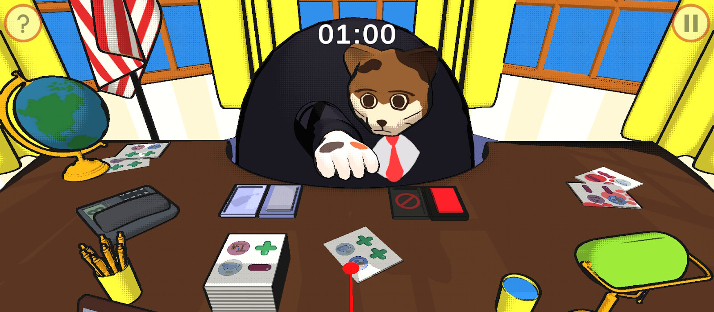

Whisker President

Timeframe: 20 weeks
Team Size: 10
I was the production lead, technical artist, and a gameplay/systems programmer on a team of 10 people for a point-and-click management game about a cat president. I recruited and managed the team, led game design discussions, implemented gameplay, and designed and implemented shaders.
Technical Art
Shaders
Cel Shading
I created custom shaders to give the game a style that resembled political posters/cartoons using Unity's ShaderLab language. I used cel shading and a combination of different outline techniques, like utilizing camera-facing normals and the depth buffer.
Halftone Shadows
I applied a halftone patterned mask to the shading to enhance the cartoony/poster style. The mask had an adjustable tiling factor that could be used to tweak how large the halftone dots should appear. Additionally, it scaled the tiling to create consistency over different resolutions and applied anti-aliasing. This effect utilized the advantage of the game having a fixed camera.
Real-Time 3D Smears
(gif framerate slowed to make smears more visible)
I created a real-time smear effect to accentuate the movement of the arm slams. This was accomplished in the vertex shader by keeping track of previous positions and rotations and offsetting with accounting for distance from the pivot point. I had it smear more on the backside of the movement, to create trails while still maintaining the front edge of the movement. The previous position buffer dynamically adjusted the delay based on the current framerate.
Particle Systems
I implemented some basic particle systems to add flavor and compliment the game’s other animations with dust particles.